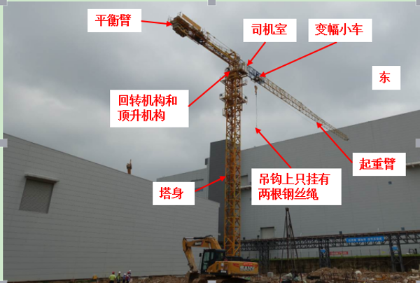
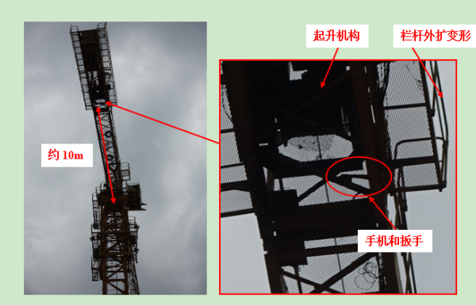
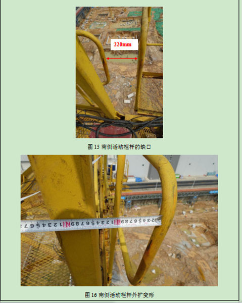

中建三局华星光电G11项目工地“5·21”高坠事故调查报告
2019年5月21日19时35分左右，光明区凤凰街道科裕路华星光电G11项目玻璃厂二期施工工地发生一起高处坠落事故，造成1人死亡。
事故发生后，根据《生产安全事故报告和调查处理条例》（国务院令493号）的规定，光明区人民政府成立了光明区凤凰街道华星光电G11项目工地“5·21”高坠事故调查组，事故调查组组长由区政府副区长刘德峰担任，事故调查组副组长由区应急管理局局长李刚、区应急管理局副局长刘建绥、区住房建设局副局长王岑担任，成员由区应急管理局、市住房建设局、光明公安分局、区住房建设局、区群团工作部等部门有关人员组成，并依法邀请区纪委监委派员参加，展开事故调查工作。事故调查组按照“四不放过”和“科学严谨、依法依规、实事求是、注重实效”的原则,通过现场勘查、查阅资料、检测鉴定和调查取证,查明了事故发生的经过、直接原因和间接原因等情况,认定了事故性质和责任,提出了对有关责任人员和责任单位的处理建议。同时,针对事故原因及暴露出的问题,提出了事故防范措施建议。具体情况如下：
一、事故基本情况
(一)事故工程情况
事故工程为第11代超高清型显示器件生产线项目玻璃厂二期（第11代线玻璃基板研磨厂厂房扩建项目）土建工程，位于深圳市光明区凤凰街道光侨路与东长路交汇处东南侧，属于向市住建局报建审批的工程。
2019年2月20日，深圳市华星光电半导体显示技术有限公司（以下简称“华星光电公司”）与世源科技工程有限公司（以下简称“世源公司”）签订《第11代超高清新型显示器件生产线项目玻璃厂二期设计-采购-施工总承包（EPC）合同》，双方同时签订了《安全环保协议》，明确了双方的安全生产管理责任。世源公司承接该EPC总包项目后，将其中的施工部分分包给中建三局集团有限公司（以下简称“中建三局公司”），双方签订了《安全环保协议书》，明确了双方的安全生产管理责任。
2019年4月21日，中建三局公司与广东庞源工程机械有限公司（以下简称“庞源工程公司”）签订《塔式起重机租赁合同》，约定由庞源工程公司负责“塔吊进退场、基脚埋件或预埋螺栓及附件的制作安装，提供司机及指挥、司索，办理地方政府职能部门规定的验收、取证手续及其他”。中建三局公司与庞源工程公司签订了《塔式起重机安全管理协议》，明确了双方的安全生产管理责任。
2019年5月17日，庞源工程公司与深圳市润泽建筑工程劳务有限公司（以下简称“润泽劳务公司”）签订《劳务外包合同》，约定由润泽劳务公司派人提供塔式起重机的操作、日常保养劳务作业，双方未在合同中约定各自的安全生产管理职责，也未签订专门的安全生产管理协议。润泽劳务公司承接塔吊劳务作业后，通过微信群招聘到塔吊司机领班刘兵、塔吊司机唐*淋（死者）、塔吊指挥何晓明、董松民，并将其派至涉事工地负责塔吊劳务作业工作。
(二)事故相关单位概况
1、建设单位：华星光电公司，经济性质：有限责任公司，法定代表人：KIM WOO SHIK，住所：深圳市光明新区公明街道塘明大道9-2号，统一社会信用代码：91440300MA5DFAEB6U，经营范围：一般经营项目：在光明新区筹建第11代薄膜晶体管液晶显示器件（含OLED）生产线；货物及技术进出口。许可经营项目：薄膜晶体管液晶显示器件（或OLED显示器件）相关产品及其配套产品的技术研发、技术咨询、技术服务、生产与销售。
2、总承包单位（EPC总包）：世源公司，经济性质：有限责任公司，法定代表人：安志星，住所：北京市海淀区万寿路27号，统一社会信用代码：91110000710931686J，经营范围：工业及民用建筑工程的设计、规划、咨询、工程评估、管理、施工、总承包；工程机械设备的销售、安装；建筑及相关工程设备、材料的研发、生产、销售及安装；生产自动化系统的研发与设计、零部件采购及销售、部件和整机装配和集成制造及销售；上述业务有关的技术咨询和服务；进出口业务。
3、施工单位：中建三局公司，经济性质：有限责任公司，法定代表人：陈华元，住所：武汉市关山路552号，统一社会信用代码：91420000757013137P，经营范围：各类建筑工程总承包、施工、咨询、建筑技术开发与转让、机械设备租赁、路桥建设，建筑工程、人防工程设计，商品混凝土的生产和批发；园林绿化工程。
4、监理单位：深圳市恒浩建工程项目管理有限公司（以下简称“恒浩工程管理公司”），经济性质：有限责任公司，法定代表人：刘君，住所：深圳市福田区彩田南路中深花园B栋27楼2711、2712、2713、2715，统一社会信用代码：91440300192366911H，经营范围：一般经营项目：工程监理（凭工程监理综合资质经营，可承担所有专业工程类别建设工程项目的工程监理业务，可以开展相应类别建设工程的项目管理、技术咨询等业务；工程招标代理甲级，造价咨询乙级，工程咨询乙级（以上凭资质经营）。
5、塔吊工程承包单位：庞源工程公司，经济性质：有限责任公司，法定代表人：汪许林，住所：广州市花都区迎宾大道西43号3号楼109-12室，统一社会信用代码：914401015523583853，经营范围：装卸搬运;起重设备安装服务;提供施工设备服务;建筑工程机械与设备租赁;机械零部件加工（仅限分支机构经营）;电梯安装程服务;电气设备修理。
6、塔吊工程劳务分包单位：润泽劳务公司，经济性质：有限责任公司，法定代表人：任纪成，住所：深圳市龙岗区南湾街道丹竹头社区龙岗大道布吉段3036号东部英郡假日广场1栋6座2801，统一社会信用代码91440300311954688N，经营范围：建筑工程、钢结构工程、幕墙工程、室内外装饰工程、土建工程、道路工程的设计与施工；信息咨询、劳务派遣、人才中介机构和职业介绍机构设立。
7、政府部门监管单位：深圳市建筑工程质量安全监督总站，为市住建局的直属事业单位，受市住建局委托，负责在市住建局报建的建筑工程的质量安全监督执法工作。
（三）事故人员基本情况
1、唐*淋，死者，男，21岁，润泽劳务公司塔吊司机，具有塔式起重机起重司机相关资质。
2、汪许林，系庞源工程公司的法定代表人，负责公司的整体运营。
3、任纪成，系润泽劳务公司的法定代表人，负责公司的整体运营。
二、事故发生经过、应急救援及善后处理情况
（一）事故发生经过
2019年5月21日晚，润泽劳务公司派到事故工程工地从事塔吊劳务作业的带班刘兵、塔吊司机唐*淋（死者）、塔吊指挥何晓明、董松民四人在华星光电玻璃厂2期工地大门口集中做完班前教育后，唐*淋、何晓明、董松民三人便前往涉事4号塔吊。涉事4号塔吊设备内的“玻璃厂4#驾驶室”监控视频显示，唐*淋在19点18分登上涉事塔吊设备驾驶室，对设备进行吊钩升降、回转起重臂和移动变幅小车实验，吊钩上只挂有钢丝绳，未负重，经过14分钟的试验后，离开驾驶室。从“玻璃厂全景球机”监控视频显示，唐*淋在19点34分从涉事塔吊设备平衡臂附件坠落至地面，经送医院抢救无效后死亡。



经查：
1、深圳市气象台于2019年5月20日21时30分在宝安区（石岩街道）和光明区（凤凰、光明、新湖、马田、公明街道）发布暴雨红色分区预警。中建三局公司第11代线玻璃基板研磨厂厂房扩建项目土建工程包项目组根据《深圳市气象灾害预警信号发布规定》等规定以及气象灾害应急预案的要求，于2019年5月20日，向分包单位、劳务单位、设备租赁商发出《极端天气暂停施工通知》，明确要求“施工现场立即暂停所有基坑及承台施工作业，其余作业均需要得到项目部审批，仅允许抗洪抢险人员经审批后进行抗洪作业。具体复工时间，待暴雨过后，项目部完成全面复工安全检查后另行通知”。
2、庞源工程公司及润泽劳务公司在2019年5月20日收到中建三局下发的停工通知后，未将工地停工通知落实到位，未采取技术、管理措施及时发现和阻止唐*淋等4人在停工期间且涉事4号塔吊尚未正式投入使用前随意进入塔吊作业区域。
3、《广东省质量监督机械检验站勘查鉴定报告》指出，涉事4号塔吊机南侧活动栏杆的活动部件通过四套螺栓副进行固定，其活动部件和螺栓副均严重锈蚀，说明该处的活动栏杆长期处于开启状态，不满足GB 5144-2006《塔式起重机安全规程》第4.4.5条规定：“离地面2m以上的平台及走道应设置防止操作人员跌落的手扶栏杆。手扶栏杆的高度不应低于1m，并能承受1000N的水平移动集中载荷。”
4、唐*淋行走在驾驶室外平衡臂时未挂有安全带，不满足JGJ 184-2009《建筑施工作业劳动保护用品配备及使用标准》第2.0.4条规定：在2m及以上的无可靠安全防护设施的高处、悬崖和陡坡作业时，必须系挂安全带。
5、深圳市建筑工程质量安全监督总站监督小组在事故工程于2019年4月12日取得施工许可证后，于2019年5月15日对主体结构施工进行首次监督告知，截至2019年5月21日事故发生前，共计对事故工程监督检查1次，累计签发执法文书5份，其中，监督意见书3份，责令限期整改通知书1份，省动态责任扣分通知书1份，对于发现涉案工程存在项目经理不在岗的问题已整改。事故发生后，对施工单位及其项目经理进行了红色警示。
（二）事故救援情况
事故发生后，现场工作人员拨打了120，约10分钟后，现场工作人员将唐*淋搬上一辆面包车送去医院，经抢救无效后死亡。
（三）善后处理情况
中建三局公司与唐*淋家属达成协议，并签订《赔偿协议书》。
三、事故造成的人员伤亡情况
事故共造成1人死亡。死者唐*淋，男，21岁。
四、事故原因及性质
(一)直接原因
1、唐*淋安全意识淡薄，在进行塔吊作业时，违反操作规程，在未佩戴安全带等安全防护用品的情况下到驾驶室外平衡臂上，不慎坠落到地面。
2、涉事4号塔吊平衡臂起升机构处的活动栏杆处于开启状态，导致该处形成缺口，当未挂有安全带的涉事工人行经起升机构附近时，从活动栏杆的缺口跌落至地面，引发本次事故。
(二)间接原因
1、庞源工程公司，安全管理不到位，未将工地停工通知落实到位，未采取技术、管理措施及时发现和消除工地停工期间和涉事4号塔吊尚未正式投入使用前工人随意进入塔吊作业区域、涉事4号塔吊平衡臂起升机构处的活动栏杆处于开启状态形成缺口的事故隐患，未与润泽劳务公司签订安全生产管理协议，未与润泽劳务公司明确约定各自的安全生产管理职责，对润泽劳务公司的塔吊劳务作业统一协调、管理不到位。
2、润泽劳务公司，安全管理不到位，未将工地停工通知落实到位，未采取技术、管理措施及时发现和消除工地停工期间和涉事4号塔吊尚未正式投入使用前工人随意进入塔吊作业区域、涉事4号塔吊平衡臂起升机构处的活动栏杆处于开启状态形成缺口的事故隐患，未能督促其从业人员严格执行塔吊安全操作规程，未能督促其工人唐*淋进行塔吊作业时佩戴安全带等劳动防护用品。
(三)事故性质
调查组认为，本起事故是一起因公司及其主要负责人安全管理不到位，工人安全意识淡薄，违反操作规程作业而引发的一般生产安全责任事故。
五、事故责任认定及处理建议
（一）涉事单位的事故责任认定及处理建议
1、庞源工程公司，安全管理不到位，未将工地停工通知落实到位，未采取技术、管理措施及时发现和消除事故隐患，未与润泽劳务公司签订安全生产管理协议，未与润泽劳务公司明确约定各自的安全生产管理职责，对润泽劳务公司的塔吊劳务作业统一协调、管理不到位。其行为违反了《中华人民共和国安全生产法》第三十八条第一款、第四十六条第二款的规定,对本起事故的发生负有责任，建议由深圳市光明区应急管理局依据《中华人民共和国安全生产法》第一百零九条第（一）项的规定给予行政处罚。
2、润泽劳务公司，安全管理不到位，未将工地停工通知落实到位，未采取技术、管理措施及时发现和消除事故隐患，未能督促其从业人员严格执行塔吊安全操作规程，未能督促其工人唐*淋进行塔吊作业时佩戴安全带等劳动防护用品。其行为违反了《中华人民共和国安全生产法》第三十八条第一款、第四十二条的规定,对本起事故的发生负有责任，建议由深圳市光明区应急管理局依据《中华人民共和国安全生产法》第一百零九条第（一）项的规定给予行政处罚。
（二）涉事人员的事故责任认定及处理建议
1、死者唐*淋，安全意识淡薄，在从事高处塔吊试验作业和行走在驾驶室外平衡臂时，未佩戴安全带等安全防护用品，违反操作规程，移动到驾驶室外塔臂上。其行为违反了《中华人民共和国安全生产法》第五十四条的规定，应对本起事故的发生负有直接责任。鉴于其在事故中死亡，建议不予追究其责任。
2、庞源工程公司主要负责人汪许林，履行安全生产管理职责不到位，未督促、检查本单位项目施工现场的安全生产工作，未及时消除生产安全事故隐患。其行为违反了《中华人民共和国安全生产法》第十八条第（五）项的规定,建议由深圳市光明区应急管理局依据《中华人民共和国安全生产法》第九十二条第（一）项的规定给予行政处罚。
3、润泽劳务公司主要负责人任纪成，履行安全生产管理职责不到位，未督促、检查本单位项目施工现场的安全生产工作，未及时消除生产安全事故隐患。其行为违反了《中华人民共和国安全生产法》第十八条第（五）项的规定,对本起事故的发生负有责任，建议由深圳市光明区应急管理局依据《中华人民共和国安全生产法》第九十二条第（一）项的规定给予行政处罚。
六、事故防范和整改措施
（一） 庞源工程公司应吸取本起事故的深刻教训,严格落实企业安全生产主体责任,防止类似事故再次发生,并做到如下要求:
1、加强对施工作业现场的安全生产管理，采取技术、管理措施，及时发现并消除施工作业现场存在的事故隐患。
2、与承包单位签订专门的安全生产管理协议，或者在承包合同中约定各自的安全生产管理职责；对承包单位的安全生产工作统一协调、管理，定期进行安全检查，发现安全问题的，应当及时督促整改。
3、公司主要负责人要履行安全管理职责，认真督促、检查本单位的安全生产工作，及时消除生产安全事故隐患。
（二）润泽公司应吸取本起事故的深刻教训,严格落实企业安全生产主体责任,防止类似事故再次发生,并做到如下要求:
1、加强对施工作业现场的安全生产管理，采取技术、管理措施，及时发现并消除施工作业现场存在的事故隐患。
2、严格教育和督促从业人员执行安全操作规程，监督、教育从业人员按照使用规则佩戴、使用劳动防护用品。
3、公司主要负责人要履行安全管理职责，认真督促、检查本单位的安全生产工作，及时消除生产安全事故隐患。
（三）市住建部门要加强行业监管力度，加大对所负责的建筑工程的安全监督执法工作力度，督促企业认真履行安全生产主体责任；要加强气象灾害应急信息报送工作，优化信息报送流程和机制，完善信息直报、信息共享机制，坚决防范和遏制此类安全事故的再次发生。
原文编辑: EHS资讯
原文链接: https://ehsinfo.cn/2019/11/17/华星光电G11项目高坠事故调查报告.html
版权声明: 转载请注明出处(必须保留作者署名及链接)